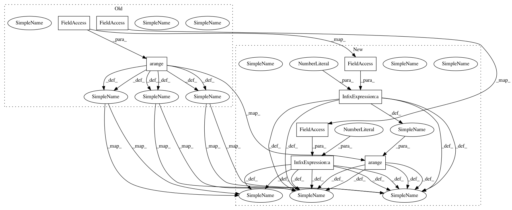

0053975c1b779ddeb72e76ef5e099eab8bde08b3,acoular/tbeamform.py,BeamformerCleant,result,#BeamformerCleant#,692
Before Change
// initialize values
numMics = self.steer.mics.num_mics
m_index = arange(numMics, dtype=int)
n_index = arange(0,num)[:,newaxis]
c = self.steer.env.c/self.source.sample_freq
delays = self.rm/c
d_index = array(delays, dtype=int) // integer index
d_interp2 = delays % 1 // 2nd coeff for lin interpolation between samples
d_interp1 = 1-d_interp2 // 1st coeff for lin interpolation
w = self._get_weights()
amp = (w/(self.rm*self.rm)).sum(1) * self.r0
amp = 1.0/(amp[:, newaxis]*self.rm) // multiplication factor
d_interp1 *= amp // premultiplication, to save later ops
d_interp2 *= amp
maxdelay = int((self.rm/c).max())+2 + num // +2 because interpolation
initialNumberOfBlocks = int(ceil(maxdelay/num))
bufferSize=initialNumberOfBlocks*num
self.buffer = zeros((bufferSize,numMics), dtype=float)
self.bufferIndex = bufferSize // indexing current time sample in buffer
fill_buffer_generator = self._fill_buffer(num)
for _ in range(initialNumberOfBlocks):
next(fill_buffer_generator)
// start processing
flag = True
while flag:
samplesleft = self.buffer.shape[0]-self.bufferIndex
if samplesleft-maxdelay <= 0:
num += samplesleft-maxdelay
maxdelay += samplesleft-maxdelay
n_index = arange(0,num)[:,newaxis]
flag=False
// init step
p_res = array(
self.buffer[self.bufferIndex:self.bufferIndex+maxdelay,:])
Phi = self.delay_and_sum(
num,p_res,d_interp1,d_interp2,d_index,m_index)
Gamma = zeros(Phi.shape)
J = 0
// deconvolution
while (J < self.n_iter):
// print(f"start clean iteration {J+1} of max {self.n_iter}")
powPhi = (Phi[:num]**2).sum(0)
imax = argmax(powPhi)
t_float = delays[imax,m_index]+n_index
t_ind = t_float.astype(int)
// t_ind = (delays[imax,m_index]+arange(0,num+1)[:,newaxis]).astype(int)
for m in range(numMics):
p_res[t_ind[:num,m],m] -= self.damp*interp(t_ind[:num,m],
After Change
// initialize values
numMics = self.steer.mics.num_mics
m_index = arange(numMics, dtype=int)
n_index = arange(0,num+1)[:,newaxis]
c = self.steer.env.c/self.source.sample_freq
delays = self.rm/c
d_index = array(delays, dtype=int) // integer index
d_interp2 = delays % 1 // 2nd coeff for lin interpolation between samples
d_interp1 = 1-d_interp2 // 1st coeff for lin interpolation
w = self._get_weights()
amp = (w/(self.rm*self.rm)).sum(1) * self.r0
amp = 1.0/(amp[:, newaxis]*self.rm) // multiplication factor
d_interp1 *= amp // premultiplication, to save later ops
d_interp2 *= amp
maxdelay = int((self.rm/c).max())+2 + num // +2 because interpolation
initialNumberOfBlocks = int(ceil(maxdelay/num))
bufferSize=initialNumberOfBlocks*num
self.buffer = zeros((bufferSize,numMics), dtype=float)
self.bufferIndex = bufferSize // indexing current time sample in buffer
fill_buffer_generator = self._fill_buffer(num)
for _ in range(initialNumberOfBlocks):
next(fill_buffer_generator)
// start processing
flag = True
while flag:
samplesleft = self.buffer.shape[0]-self.bufferIndex
if samplesleft-maxdelay <= 0:
num += samplesleft-maxdelay
maxdelay += samplesleft-maxdelay
n_index = arange(0,num+1)[:,newaxis]
flag=False
// init step
p_res = array(
self.buffer[self.bufferIndex:self.bufferIndex+maxdelay,:])
Phi = self.delay_and_sum(
num,p_res,d_interp1,d_interp2,d_index,m_index)
Gamma = zeros(Phi.shape)
J = 0
// deconvolution
while (J < self.n_iter):
// print(f"start clean iteration {J+1} of max {self.n_iter}")
powPhi = (Phi[:num]**2).sum(0)
imax = argmax(powPhi)
t_float = delays[imax,m_index]+n_index
t_ind = t_float.astype(int)
for m in range(numMics):
p_res[t_ind[:num+1,m],m] -= self.damp*interp(t_ind[:num+1,m],
t_float[:num,m],
In pattern: SUPERPATTERN
Frequency: 4
Non-data size: 8
Instances
Project Name: acoular/acoular
Commit Name: 0053975c1b779ddeb72e76ef5e099eab8bde08b3
Time: 2020-04-01
Author: kujawski.ad@gmail.com
File Name: acoular/tbeamform.py
Class Name: BeamformerCleant
Method Name: result
Project Name: acoular/acoular
Commit Name: 0053975c1b779ddeb72e76ef5e099eab8bde08b3
Time: 2020-04-01
Author: kujawski.ad@gmail.com
File Name: acoular/tbeamform.py
Class Name: BeamformerCleantSq
Method Name: result